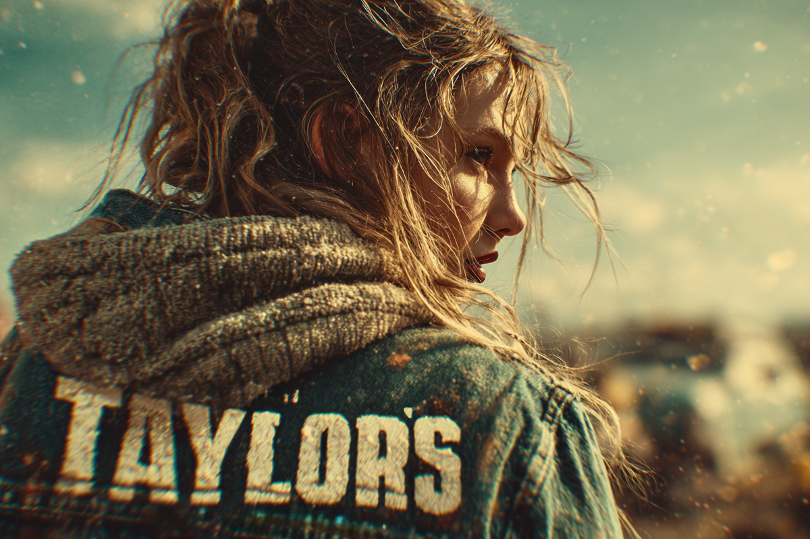
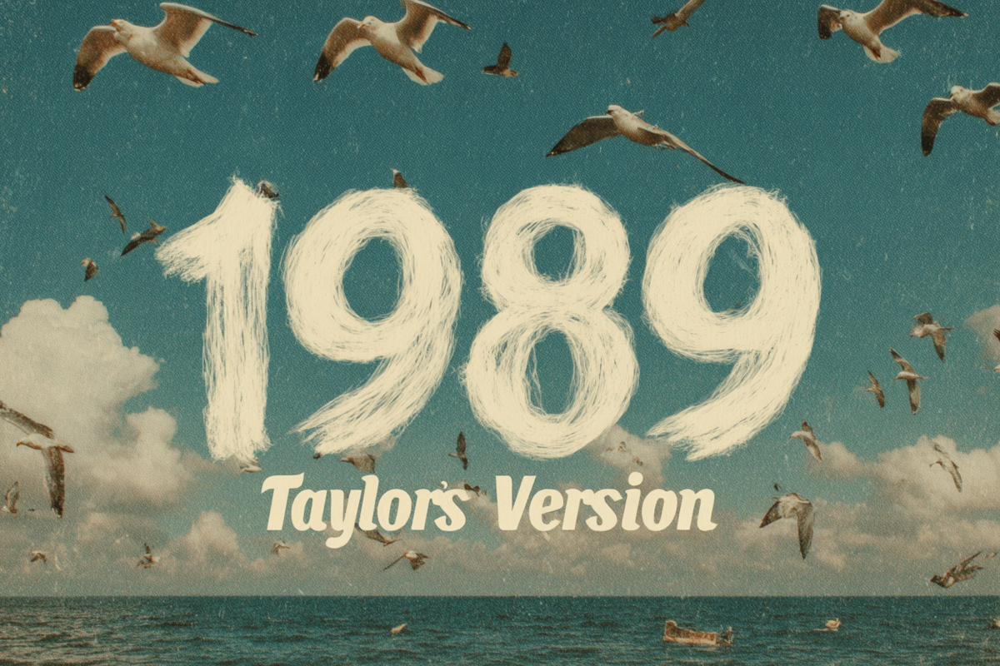

Taylor's version: una mirada al triunfo de Taylor Swift
¿Qué sucedió con los derechos de su música?
¿Qué sucedió con los derechos de su música?

Muchos conocen a la cantautora norteamericana Taylor Swift, pero no todos saben que la artista se encontró en una batalla legal tremenda con tal de recuperar el 100% de los créditos de sus canciones.
Para muchos, esto puede leerse como un dolor de cabeza o un tema que simplemente está tan alejado de la realidad de las personas comunes, que ni siquiera vale la pena darle un repaso. Sin embargo, no creo que sea una pérdida de tiempo aprender sobre este conflicto, sobre todo porque fue un tema que mantuvo en vilo a varios seguidores no solo de Taylor, sino que también a otros artistas que pudieron o pasaron por algo similar.
Así que ahora, sin más preámbulos, transparentaremos algunos de los más importantes puntos sobre este conflicto, uno que enfrentó a una industria musical con sus poderosos representantes, y a una compositora igual de poderosa, pero que se vio con las manos atadas ante un giro legal difícil de sortear.
Quizás, antes de todo, sería bueno hacer una micro cronología de la carrera de Taylor Swift y su ascenso meteórico desde que su primer single “Tim McGraw” tocó los top 10 de las listas de música country en Billboard. De todas maneras, no fue hasta el año 2008 con sus canciones “Love Story” y “You Belong With Me” que la cantante se asentó en el mainstream para no irse nunca más. Dos años después, con solo 20 años, Switft se subía al escenario de los Grammy para recibir la estatuilla por el Mejor Álbum del Año.
El mismo 2010 lanza “Speak Now”, un álbum compuesto 100% por ella y con el cual se va de gira mundial, consolidando su presencia como una artista que se escapa de a poco del country para llegar de manera más íntegra al público general.
En los próximos 4 años, el inminente salto al pop por fin se llevó a cabo y la cantante lanza dos de sus discos más icónicos, “Red” (2012) y “1989” (2014). El 2016, con este último trabajo, la cantante se lleva nuevamente el Grammy más importante de la premiación.
No fue hasta el 2020 que Swift se pega el salto e incursiona en una estética más indie y folk, con una lírica más introspectiva, aunque sin alejarse 100% del pop que le dio tantas satisfacciones en su carrera. Ahora, la crítica la observa con más interés que antes.
El 2021 vuelve a llevarse el Grammy al mejor álbum del año por su álbum “Folklore” (2021), transformándose en la primera mujer en la historia en llevarse tres de estas estatuillas en la categoría más importante de esta premiación.
Para que nos hagamos una idea, desde que Taylor Swift comenzó su carrera artística en las disqueras a los 16 años, ya había firmado su contrato con Big Machine Records, sello con el que alcanzó a grabar seis de sus álbumes antes de marcharse el 2018 para firmar con Republic Records, propiedad de Universal Music.
Destacamos que Big Machine se quedó con las grabaciones originales de los álbumes que alcanzó a grabar junto a la cantante y que, al término de contrato, Swift ya había decidido ser dueña de sus propias grabaciones.
El año 2019 es cuando las cosas se ponen complicadas y entra uno de los enemigos principales de Taylor: Scooter Braun. Es que el dueño de Big Machine decidió vender el sello a Braun a través de su label Ithaca Holdings y esta venta incluía las grabaciones de la artista. Al enterarse, Swift mostró su descontento de manera pública, ya que consideró injusto que no se le diera la oportunidad de comprar sus grabaciones.
Esta molestia de la cantante fue en incremento luego de que Big Machine lanzara dos presentaciones en vivo de Taylor sin su autorización, una el 2019 y otra el 2020. Además, Swift confirmó que el sello le había prohibido interpretar una de sus canciones antiguas en un documental y en un show en vivo. Con esto, ese mismo año, la cantante decidió que iba a volver a grabar todas sus canciones nuevamente con tal de recuperar la propiedad de su música.
Pero eso no fue todo. El 2020 Braun vende las grabaciones de Taylor a otro postor: Shamrock Capital.

Aquí es cuando Taylor Swift, el 2021, realiza una movida magistral: regraba los álbumes “Fearless”, “Red”, “Speak Now” y “1989” bajo el título de “Taylor’s Version”. ¿Qué significaba esta decisión? Que, tras unos pequeños cambios en las versiones originales, las canciones podrían volver a ser propiedad de la cantante.
Con el apoyo del público, los nuevos tracks con el toque de la “versión de Taylor” fueron un total éxito, superando los números conseguidos con sus canciones originales en ventas y en las plataformas de streaming.
No puedo dejar de mencionar lo logrado con una versión de 10 minutos de su canción “All Too Well", parte de su disco “Red”, que también tuvo un vídeo clip que se popularizó en su lanzamiento.
Cerrando este complejo ciclo en la trayectoria de la cantante, Swift por fin consiguió comprar todos sus másters originales por la millonaria suma de 360 millones de dólares.
“De verdad puedo decir estas palabras: Toda la música que he creado… ahora me pertenece. Todos mis videos musicales. Todas las películas de conciertos. El arte y fotografía de los álbumes. Las canciones inéditas. Los recuerdos. La magia. La locura. Cada una de las eras. Todo el trabajo de mi vida”, comentaba Taylor en su sitio web después de, tras año de batallar, consiguió la victoria.
Con todo este conflicto, los dimes y diretes entre algunos de los representantes más poderosos de la industria musical, se preveían debates y consecuencias sobre las reglas del juego y las áreas grises en los contratos discográficos.
¿Hasta dónde los compositores tienen derecho sobre sus obras originales al momento de firmar con una discográfica?, ¿o eso escapa de lo que un sello pueda obtener del artista? ¿Los artistas deberían tener garantizado el derecho a comprar sus obras? ¿En qué momento se pueden hacer reversiones de álbumes?, ¿es necesario esperar una cantidad de años para hacerlo? Y no solo pensamos en esas preguntas, sino que también en el rol del fan como agente clave en las grandes luchas de sus ídolos y su compromiso ético en favor de la justicia.
 Cultura
CulturaSé que suena raro hablar de calor extremo mientras en Chile todos están buscando la parka más gruesa del clóset.
 Cultura
CulturaEl hecho de que estemos entrando al mes de julio no se puede creer. Pero lo que tampoco se puede creer es la cantidad de artistas que han…
 Cultura
CulturaCuando hablamos de trabajos clásicos de la música chilena, siempre se nombran los discos de Violeta Parra, Víctor Jara, Los Jaivas o…